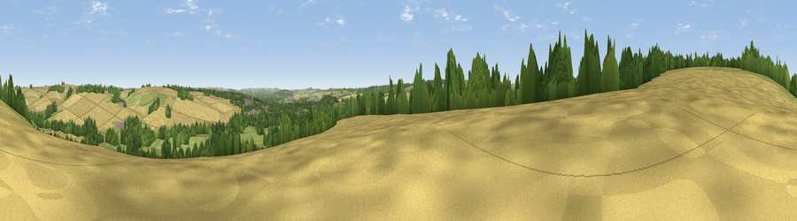

Viewpoint near Wilton
#33291 in England · top 57% of its area beats it · near WiltonThe view, rendered

A 360° render of this exact spot computed from the terrain model, tree cover and land cover — summer colours, afternoon light, calibrated against photographs of famous viewpoints. Real trees, hedges and buildings will differ in detail.
The panorama
Grey silhouette: terrain skyline in each direction (720 bearings, Earth curvature and refraction included). Dashed green: skyline with trees (+15 m) and buildings (+8 m) as obstacles. Blue strip: how far the ground is visible on each bearing.
Where the view opens
Wedge length = distance to the farthest visible ground on that bearing (vegetation-aware). Rings at 10, 25 and 50 km.
What fills the view
44% cropland · 33% grassland · 19% woodland · 4% built-up
Angular shares of the visible panorama (visual magnitude), not map area. Landscape diversity 0.51 (0–1 Shannon).
Key numbers
More beautiful places nearby
The staircase of upgrades: each row has a higher view potential than everything closer. Driving times are estimates from straight-line distance, calibrated against real road routing — check an actual route before setting out.
| Place | Direction | Drive | Score |
|---|---|---|---|
| Heath Hill | NW · 2 km | ~4 min | 41.0 |
| Viewpoint near Great Wishford | NW · 2 km | ~6 min | 45.4 |
| Viewpoint near Great Wishford | NNW · 3 km | ~8 min | 49.8 |
| Smithen Down | NNE · 3 km | ~8 min | 56.3 |
| Viewpoint near Burcombe | SSW · 4 km | ~8 min | 56.9 |
| Bishopstone Down | SSW · 4 km | ~9 min | 57.6 |
| Hydon Hill | SW · 6 km | ~12 min | 61.2 |
| Marleycombe Hill | SSW · 12 km | ~22 min | 63.3 |
51.09197, -1.87965 · source: screening · position refined by local search. Computed location — check access rights before visiting.